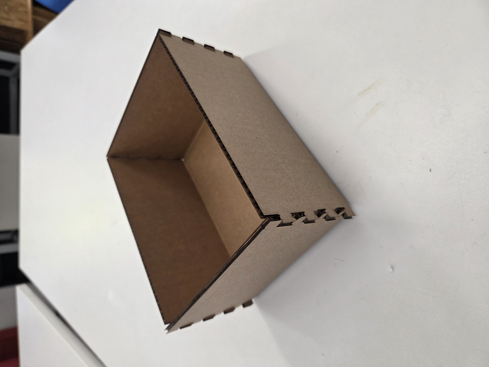
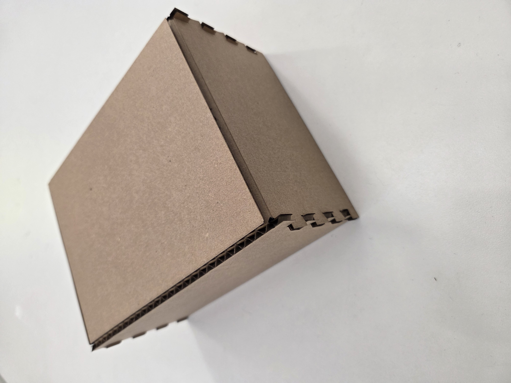
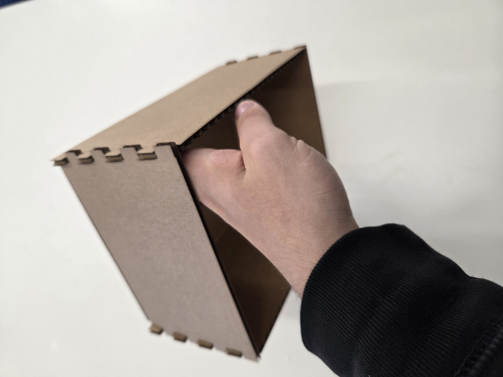

PRODUCT

General view of the box.

View of the bottom.

Demonstrating stability and depth.
PROCESS
I didn't do anything especially adventurous for this first project so there is little of note to report in the process. I followed the AutoFusion tutorial for building the box in the sketch and had relatively little trouble in its construction. Almost everything was built using the [change parameter] function which made iteration very easy. However, in between my first draft and final product I did reduce the number of fingers on each side by one. When I did so, the lengths of each of the fingers adjusted correctly but they didn't connect to the base of the box correctly. I assume I must have manually inputted something instead of using a parameter, which led to this mild annoyance during iteration. My first draft was unsuccessful (sadly I forgot to take photos, but will be more diligent in my documentation going forward), I believe for two reasons: first, the score function didn't penetrate deep enough to split the double-layered cardboard in two, preventing its proper folding; and secondly, because the fingers were too small from being so plentiful, making it more difficult to slot them together without crushing one or more. For the final draft, I reduced the number of fingers, used thinner cardboard, and increased the intensity of the scoring.
LESSONS
I forgot to edit the thickness parameter in my final draft, leading to the fingers extruding a bit further than they should have. However, this did not affect the structural integrity of the box, nor was it much of a visual blemish, so I decided to leave it. Were I to repeat this assignment, I would be more thorough in ensuring parameters are used at all steps of the sketching process and also doublecheck the accuracy of all of my inputs before printing. It would also be fun to customize it if I had more time. I also learned how to use the vinyl printer, although it was being ornery so I have no sticker to show for it (yet).